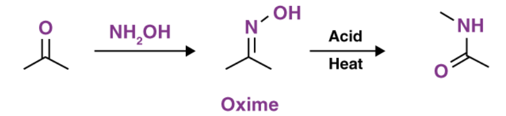
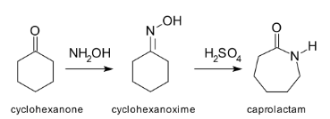
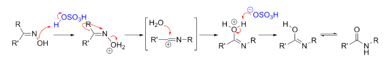

Beckmann rearrangement is an important organic reaction in which oximes (derived from aldehydes or ketones) are converted into amides when treated with acidic reagents such as concentrated H₂SO₄ or PCl₅. The reaction involves migration of a group from carbon to nitrogen.


The reaction proceeds through protonation of the oxime followed by loss of
water and migration of a group (anti to –OH) to nitrogen, forming a nitrilium
ion which finally gives an amide.

The group that is anti (opposite) to the –OH group in the oxime migrates during the rearrangement.